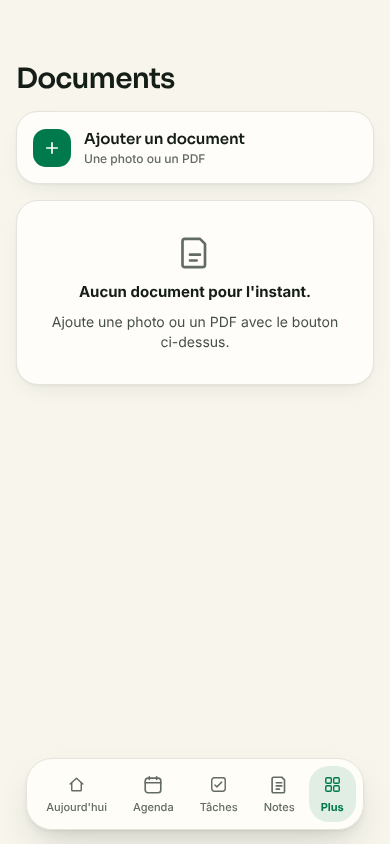
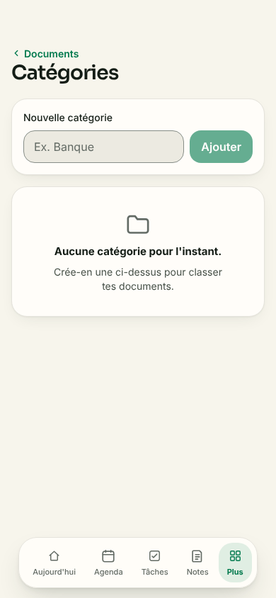
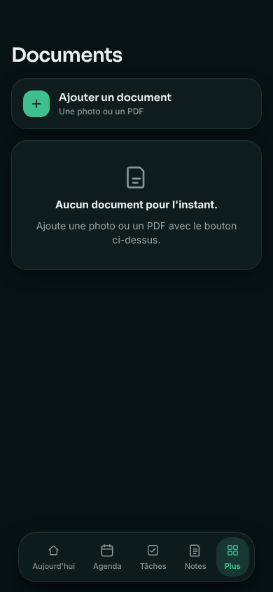
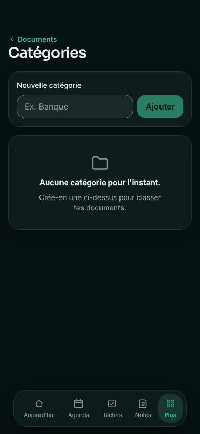

Module « documents » — 3 écran(s)

/documents
clair · HTTP 200
/documents/[id]
clair · non résolue

/documents/categories
clair · HTTP 200

/documents
sombre · HTTP 200
/documents/[id]
sombre · non résolue

/documents/categories
sombre · HTTP 200